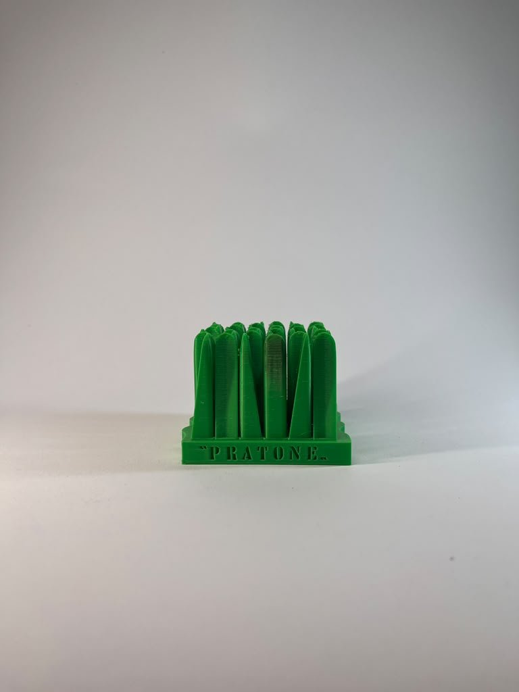
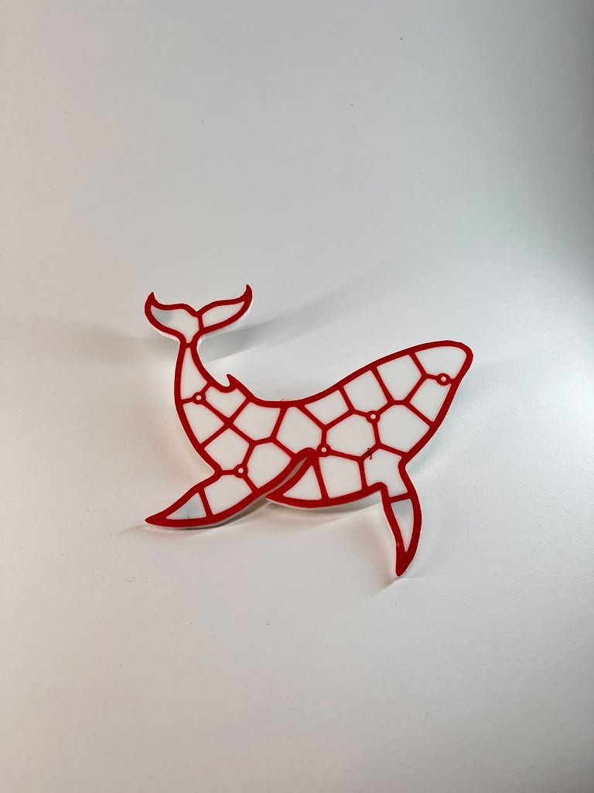
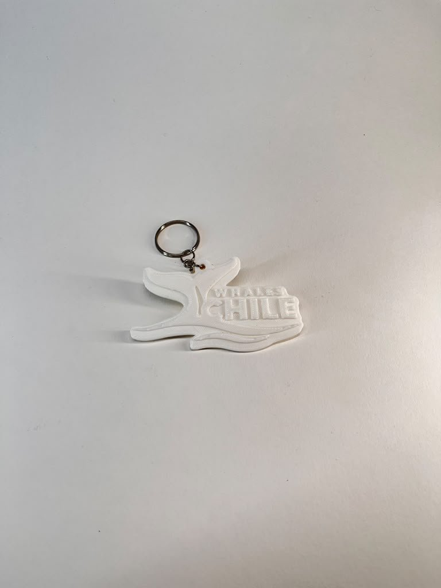
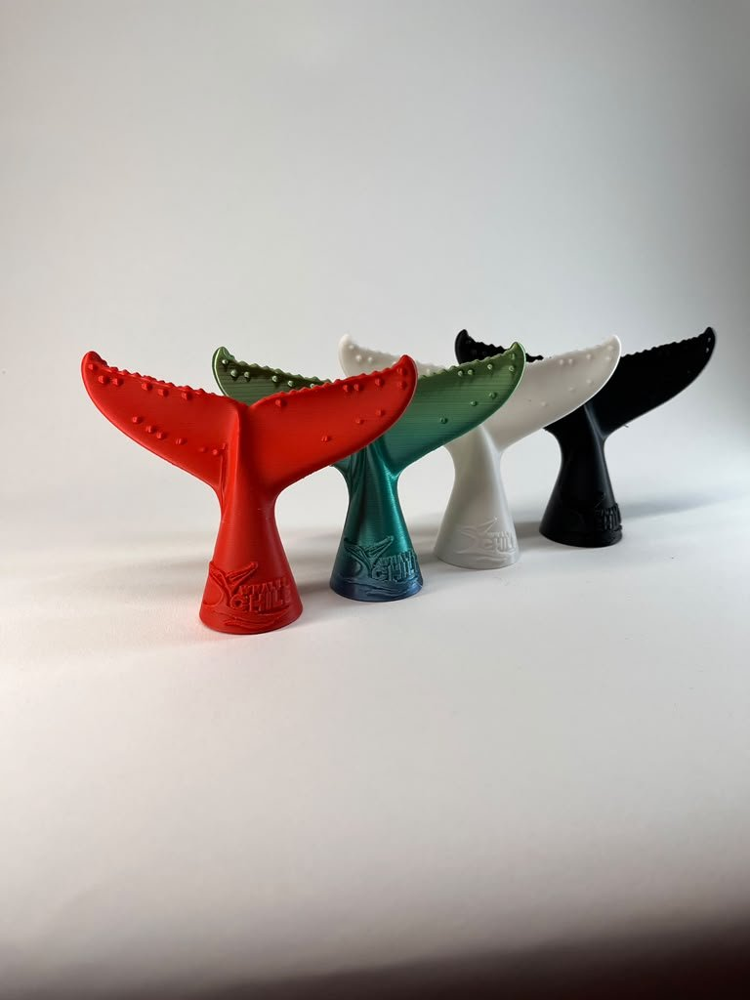
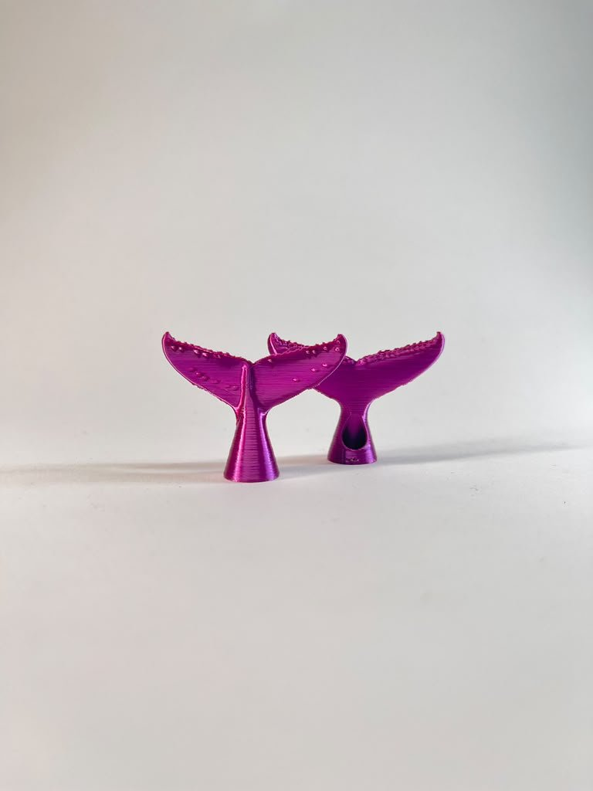
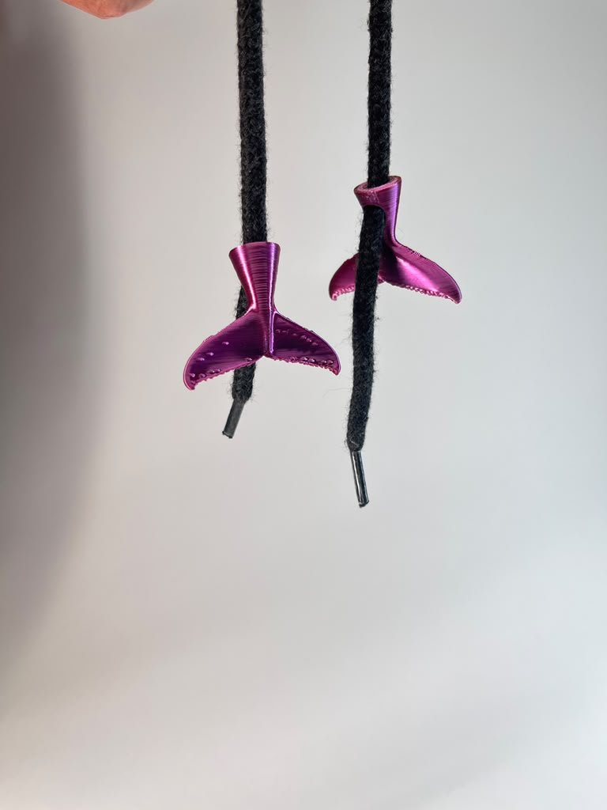
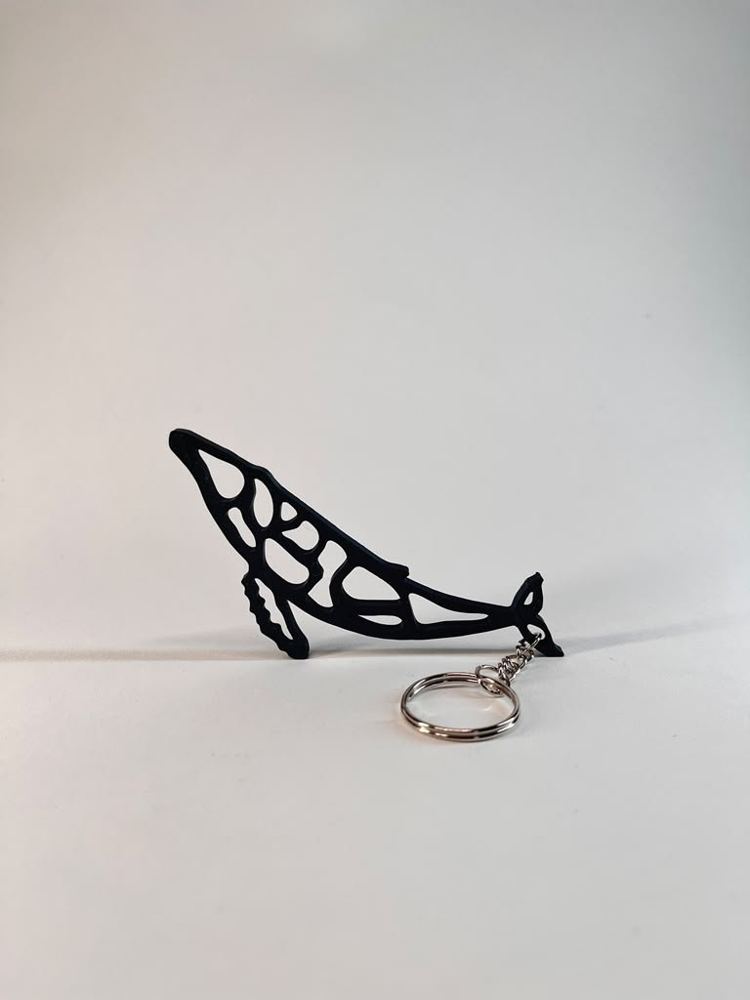

ma!te — Diseñadora industrial
ma!te — Diseñadora industrial — Santiago de Chile
Scroll para explorar ↓
About me
Soy Maite Villarroel Carreño, estudiante de Diseño Industrial en la Universidad Diego Portales. Mi trabajo se orienta al desarrollo de objetos y soluciones mediante la exploración de herramientas, materiales y procesos de fabricación. Me interesa especialmente la relación entre diseño, tecnología e interacción digital, explorando nuevas formas de conectar a las personas con los objetos y sus entornos.
Paralelamente, gestiono pura maña, un estudio propio de fabricación digital e impresión 3D, donde desarrollo proyectos para clientes y empresas. Me encargo de las distintas etapas de producción, desde el modelado tridimensional y la selección de materiales hasta la fabricación final.
CAD & 3D
- Rhino
- Inventor
- AutoCAD
- Impresión 3D
Gráfica & Electrónica
- Illustrator
- KiCad
Desarrollo Web
- HTML
- CSS
- JavaScript
- VS Code
- GitHub
Proyectos
08 proyectos · 2 categorías01 — Categoría
Diseño de Productos
02 — Categoría
Interacción Digital
Emprendimiento / Proyecto propio
pura maña
Gestiono mi propio estudio de fabricación digital e impresión 3D, encargándome de todo el proceso: desde el modelado 3D y la selección de materiales hasta la producción final para clientes y empresas.
- ServiciosFabricación digital · Impresión 3D
- Instagram@puramana3d ↗






